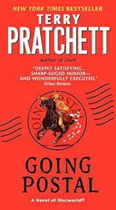
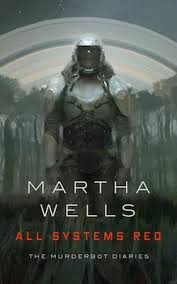

A couple years back, my family and I took a trip up to Alaska for my
brother's 30th birthday. While we were up there, we went on a seaplane
tour of Misty Fjords National Park and actually landed on one of the lakes
they have up there.
The view was gorgeous, but what really wowed me was
how quiet it was; once the pilot cut the engine, we were surrounded by
absolute stillness and tranquility, and it was one of the most incredible
moments of my life.
Mexica Burrito Grill: This place makes killer rice bowls and burritos with a ton of mix-in options for a pretty good price. I used to live within walking distance of it, and I still swing by every now and then because it's so good.

Muffins are one of those foods that are just good in any shape in my opinion; regular-sized, mini muffins, muffintops, you name it. I tend to prefer a standard muffin since it's easier to have just one... I cannot be trusted around mini muffins. When eating a muffin, I will usually remove the paper and separate the top of the muffin from the bottom; I will then eat the bottom half first and have the top last.
| Title | Cover Art | Author | Summary |
|---|---|---|---|
| Going Postal |  |
Terry Pratchett | Going Postal chronicles the exploits of the con artist Moist von Lipwig. After being captured and sentenced to death, Moist is given the opportunity to escape his fate so long as he revives the defunct and impossibly backlogged Ankh-Morpork Postal Service. |
| Mistborn | |
Brandon Sanderson | Mistborn is a fantasy novel set in the bleak, soot-covered Final Empire and tells the story of a street urchin named Vin as she rebels against an immortal god-emperor known as the Lord Ruler. |
| All Systems Red |  |
Martha Wells | All Systems Red is the first book in the Murderbot Diaries, a sci-fi series about a snarky cyborg security unit experiencing the depression and anxiety that comes about when someone has the bright idea of integrating organic components with an artificial neural system (think Robocop in reverse). Follow along with the titular Murderbot as it attempts to hide the fact that it has gone rogue so that it can devote itself to its one great love: soap operas. |
| Good Omens | |
Terry Pratchett & Neil Gaiman | Good Omens follows the naive and uptight angel Aziraphale and the sarcastic, moody demon Crowley as they work together to find the misplaced Antichrist and stop the end of the world. |